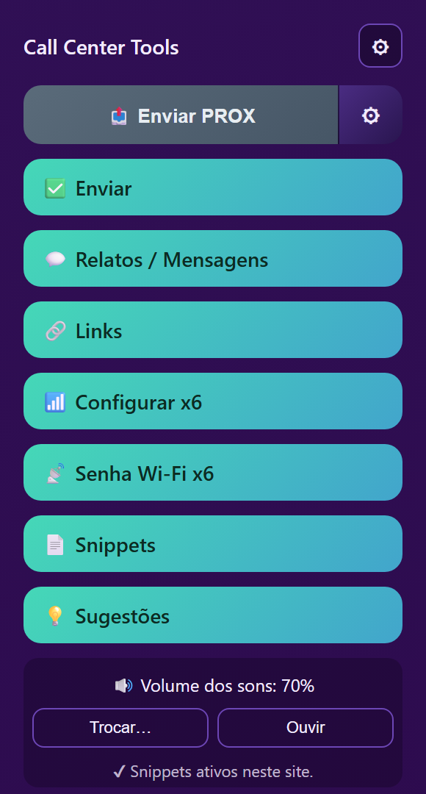

Atendimento
mais rápido,
equipe mais produtiva
A CallCenter - TOOLS reúne num só lugar tudo que a sua operação precisa: envio de mensagens pelo WhatsApp, frases prontas com áudio, relatos, sugestões e automações que encurtam minutos a cada atendimento.
7+ ferramentas · 1 clique · 0 abas extras
instala em menos de 2 min!
Tudo que a operação precisa, num só clique
Substitua planilhas soltas, textos copiados à mão e abas de mais por um painel único e rápido.
Botão PROX
Envie uma mensagem padrão para o grupo de atendimento pelo WhatsApp com um único clique — sem sair da página que você já está usando.
Snippets com áudio
Frases prontas organizadas por categoria, com atalho e reprodução de áudio. Insira e envie no chat automaticamente.
Relatos rápidos
Gere relatos padronizados direto na página de atendimento, com os campos que a sua equipe já usa no dia a dia.
Sugestões
Formulário estruturado para a equipe pedir melhorias e reportar problemas — chega organizado no grupo de suporte.
Flutuante ou barra lateral
Escolha como quer acessar as ferramentas em cada site: botão arrastável, barra lateral ou os dois juntos.
Mensagens rápidas
Respostas frequentes à mão, abertas na aba que você já está usando — sem trocar de tela no meio do atendimento.
Do zero ao atendimento em três passos
Simples de instalar, simples de usar. Sem curva de aprendizado pesada para a equipe.
Instale em segundos
Adicione pelo Chrome Web Store ou carregue o pacote. Não precisa de servidor nem de configuração complexa.
Configure uma vez
Ajuste volume, som de confirmação, snippets padrão e a forma de acesso. Fica salvo no seu navegador.
Atenda mais rápido
Com os botões à mão, cada atendimento leva menos tempo e segue o padrão da operação.
Seus dados ficam com você
Sem telemetria, sem rastreamento, sem anúncios. Tudo no seu computador.
Dados locais
Snippets, preferências, volume e som personalizado ficam no chrome.storage.local do seu próprio navegador. Apagar a extensão apaga tudo.
Transparência total
A política de privacidade descreve exatamente o que é armazenado e as únicas requisições de rede que existem — e quando elas acontecem.
Pronto para turbinar o atendimento da sua equipe?
Instale em um clique pela Chrome Web Store e comece a usar em minutos.
Instalar na Chrome Web Store